Entity Relationship Diagram (ER Diagram)
แผนผังแสดงความสัมพันธ์ของฐานข้อมูลหลัก PostgreSQL ที่ออกแบบไว้สำหรับระบบ Scam Image Detection
ER Diagram for ScamGuard (11 ตาราง: 9 หลัก + 2 archive)
แผนผังแสดงความสัมพันธ์ของฐานข้อมูลหลัก (PostgreSQL) ที่ออกแบบไว้สำหรับระบบ Scam Image Detection
หมายเหตุ: constraints ตรงกับ
server/app/models/*.py— ข้อความใน"..."ของแต่ละฟิลด์ ระบุ nullable / default / unique / index / FK ondelete

ดู Mermaid source
erDiagram
users {
int id PK "index"
string email "NOT NULL, unique, index"
string hashed_password "NOT NULL"
string full_name "nullable"
string role "NOT NULL, default user; user, researcher; CHECK ck_users_role (admin แยกตาราง admins)"
boolean is_active "default True"
datetime created_at "server_default now()"
datetime updated_at "server_default now(), onupdate now()"
}
admins {
int id PK "index"
string email "NOT NULL, unique, index"
string hashed_password "NOT NULL"
string full_name "nullable"
boolean is_active "default True"
boolean is_superadmin "default False"
datetime created_at "server_default now()"
datetime updated_at "server_default now(), onupdate now()"
}
scans {
uuid id PK "default uuid4"
int user_id FK "nullable; FK users.id ON DELETE SET NULL; index"
string image_hash "NOT NULL, SHA-256 String(64), index"
string title "nullable"
string raw_image_url "NOT NULL"
string heatmap_image_url "nullable"
int text_score "NOT NULL, default 0; CHECK 0-100"
int visual_score "NOT NULL, default 0; CHECK 0-100"
int source_score "NOT NULL, default 0; CHECK 0-100"
int total_risk_score "NOT NULL, default 0; CHECK 0-100"
jsonb exif_data "nullable"
text ocr_text "nullable"
jsonb scam_keywords_found "nullable"
jsonb reverse_search_results "nullable"
float ai_gen_probability "default 0.0"
text xai_explanation "nullable"
string status "NOT NULL, default pending; CHECK 8 ค่า (ดูหัวข้อ constraints)"
int progress "NOT NULL, default 0; CHECK 0-100"
datetime created_at "server_default now(), index"
datetime updated_at "server_default now(), onupdate now()"
datetime completed_at "nullable"
}
scam_reports {
int id PK
int user_id FK "nullable; FK users.id ON DELETE SET NULL; index"
uuid scan_id FK "nullable; FK scans.id ON DELETE SET NULL; index"
string category "NOT NULL, default other, index; CHECK 7 ค่า canonical"
text reason "NOT NULL"
string platform "nullable"
string reference_url "nullable"
boolean allow_research_use "NOT NULL, default False"
string status "NOT NULL, default pending; pending, reviewing, approved, rejected; index"
text admin_note "nullable"
int moderated_by FK "nullable; FK admins.id ON DELETE SET NULL; index"
datetime moderated_at "nullable"
datetime created_at "server_default now(), index"
int version "NOT NULL, default 1"
}
consent_logs {
int id PK
int user_id FK "nullable; FK users.id ON DELETE SET NULL; index"
boolean system_consent "NOT NULL, default True"
boolean research_consent "NOT NULL, default False"
string ip_address "nullable"
text user_agent "nullable"
datetime created_at "server_default now()"
}
model_versions {
int id PK
string version_tag "NOT NULL, unique"
string file_path "NOT NULL"
boolean is_active "NOT NULL, default False"
datetime deployed_at "server_default now()"
string artifact_checksum "nullable"
string framework_compatibility "nullable, default onnx"
float a_acc "nullable; เดิม accuracy (เปลี่ยนโดย 042de00eee1b)"
float m_iou "nullable; เดิม precision (เปลี่ยนโดย 042de00eee1b)"
float m_acc "nullable; เพิ่มโดย 042de00eee1b"
float m_dice "nullable; เพิ่มโดย 042de00eee1b"
string dataset_reference "nullable"
int created_by FK "nullable; FK admins.id ON DELETE SET NULL; index"
string status "NOT NULL, default inactive; CHECK pending, active, inactive, failed"
jsonb deployment_history "nullable"
}
admin_sessions {
string id PK "String(64)"
int admin_id FK "NOT NULL; FK admins.id ON DELETE CASCADE; index"
string refresh_hash "NOT NULL, unique, index"
datetime expires_at "NOT NULL"
datetime revoked_at "nullable, index"
string replaced_by "nullable; ไม่มี FK (รหัส session ใหม่แบบ plain text)"
string user_agent "nullable"
string ip_address "nullable"
datetime created_at "server_default now()"
datetime last_used_at "nullable"
}
audit_log {
int id PK
int admin_id FK "nullable; FK admins.id ON DELETE SET NULL; index"
string action "NOT NULL, index"
string entity_type "nullable, index"
string entity_id "nullable"
jsonb before_state "nullable"
jsonb after_state "nullable"
text reason "nullable"
string ip_address "nullable"
text user_agent "nullable"
string request_id "nullable"
text details "nullable"
datetime created_at "server_default now(), index"
}
export_jobs {
uuid id PK "default uuid4"
int admin_id FK "nullable; FK admins.id ON DELETE SET NULL; index"
string status "NOT NULL, default queued; CHECK queued, running, succeeded, failed, canceled, expired"
float progress "NOT NULL, default 0.0"
int total_rows "nullable"
bigint file_size_bytes "nullable"
string error_message "nullable"
string file_path "nullable"
jsonb manifest "nullable"
jsonb filter_config "NOT NULL"
datetime expires_at "nullable"
datetime created_at "NOT NULL, server_default now()"
datetime completed_at "nullable"
}
%% Relationships
users |o--o{ scans : "performs"
users |o--o{ scam_reports : "submits"
users |o--o{ consent_logs : "records"
admins |o--o{ scam_reports : "moderates"
admins |o--o{ audit_log : "performs"
admins ||--o{ admin_sessions : "has"
admins |o--o{ model_versions : "deploys"
admins |o--o{ export_jobs : "creates"
scans |o--o{ scam_reports : "is reported in"
audit_log_archive {
int id PK
string action "index"
datetime archived_at "server_default now()"
}
consent_logs_archive {
int id PK
int user_id "nullable, index"
datetime archived_at "server_default now()"
}
รายละเอียดแต่ละตาราง
- users: เก็บข้อมูลบัญชีผู้ใช้ (role: user/researcher; admin แยกตาราง admins); consent เก็บใน consent_logs
- admins: เก็บข้อมูลบัญชีผู้ดูแลระบบแยกตาราง (is_superadmin, default False)
- scans: เก็บข้อมูลสรุปของการสแกนรูปภาพ พร้อมคะแนนความเสี่ยง สถานะการประมวลผล หัวข้อภาพ และคำอธิบาย XAI (ระดับความเสี่ยงคำนวณตอนแสดงผล)
- scam_reports: การรายงานภาพว่าเป็น Scam โดยผู้ใช้ สำหรับให้แอดมินใช้ตรวจสอบและอนุมัติเข้าชุดข้อมูล
- consent_logs: ใช้เก็บประวัติการยินยอมเพื่อทำ PDPA Compliance แบบตรวจสอบย้อนหลังได้ (ลบ user แล้ว row อยู่ต่อแบบ user_id NULL + trigger ล้าง ip_address/user_agent)
- model_versions: ข้อมูลโมเดล AI ที่ Deploy แต่ละเวอร์ชัน พร้อม metrics และการควบคุม Rollback
- admin_sessions: session/refresh-token rotation ของ admin (replaced_by ไม่มี FK)
- audit_log: บันทึกกิจกรรมสำคัญที่กระทำโดย Admin (Append-only ผ่าน trigger
trg_prevent_audit_log_modificationห้าม UPDATE/DELETE) เพื่อความโปร่งใสและตรวจสอบความปลอดภัย - export_jobs: งาน export dataset ของ admin
- audit_log_archive / consent_logs_archive: ที่เก็บ log เกิน retention 1 ปี
(+
archived_at, ไม่มี FK/trigger)
สรุป constraints (ตรงกับ
server/app/models/*.py + migration d4e5f6a7b8c9)
- Unique: users.email, admins.email, model_versions.version_tag, admin_sessions.refresh_hash
- CHECK (migration
d4e5f6a7b8c9): users.role (user, researcher); scans.status (8 ค่า: pending, uploading, queued, processing_source, processing_visual, processing_text, completed, failed); scans scores/progress 0–100; scam_reports.category (7 ค่า canonical); scam_reports.status (pending, reviewing, approved, rejected); model_versions.status (pending, active, inactive, failed); export_jobs.status (queued, running, succeeded, failed, canceled, expired) - Index เพิ่มเติม (migration
8b428eff3721+d4e5f6a7b8c9): audit_log(action, admin_id, created_at, entity_type), scam_reports(category, status, created_at, user_id, scan_id, moderated_by), scans(user_id, created_at), consent_logs(user_id), model_versions(created_by), export_jobs(admin_id) - ON DELETE: consent_logs.user_id → SET NULL (เก็บหลักฐาน PDPA); scans.user_id → SET NULL; scam_reports.user_id/scan_id/moderated_by → SET NULL; audit_log.admin_id → SET NULL; model_versions.created_by, export_jobs.admin_id → SET NULL; admin_sessions.admin_id → CASCADE
- ไม่มี FK: admin_sessions.replaced_by เป็น String(64) ธรรมดา เก็บ id ของ session ใหม่ตอน rotation
Triggers
trg_prevent_audit_log_modification(migratione3844dc4110e, แก้โดยc8d9e0f1a2b3): กัน UPDATE/DELETE บน audit_log ยกเว้น DELETE ใน transaction ที่ตั้งSET LOCAL app.allow_audit_archive='on'(มีแค่สคริปต์ archive ใช้)trg_anonymize_consent_on_user_delete(migrationb7c8d9e0f1a2): ล้าง ip_address/user_agent ใน consent_logs เมื่อลบ user
Retention
- scans + ไฟล์รูป: ลบอัตโนมัติเมื่ออายุเกิน 90 วัน (
scripts/purge_old_scans.py, cron ทุกวัน 03:00) - audit_log/consent_logs: archive เมื่ออายุเกิน 1 ปี (
scripts/archive_old_logs.py, cron วันที่ 1 เวลา 04:00) - ไฟล์ export: เก็บ 7 วันแล้ว mark
expired
ประเด็นสำคัญ
- PostgreSQL 11 ตารางคือ Source of Truth ของข้อมูลมีโครงสร้าง (9 หลัก + 2 archive)
- enum/status ทั้งหมดบังคับที่ระดับ DB ด้วย CHECK ไม่ใช่แค่โค้ด
- หลักฐาน PDPA (consent) อยู่รอดการลบ user: ตัด link + ล้าง PII แทนการลบ row